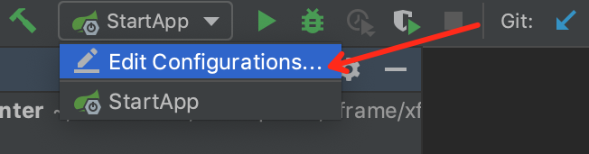
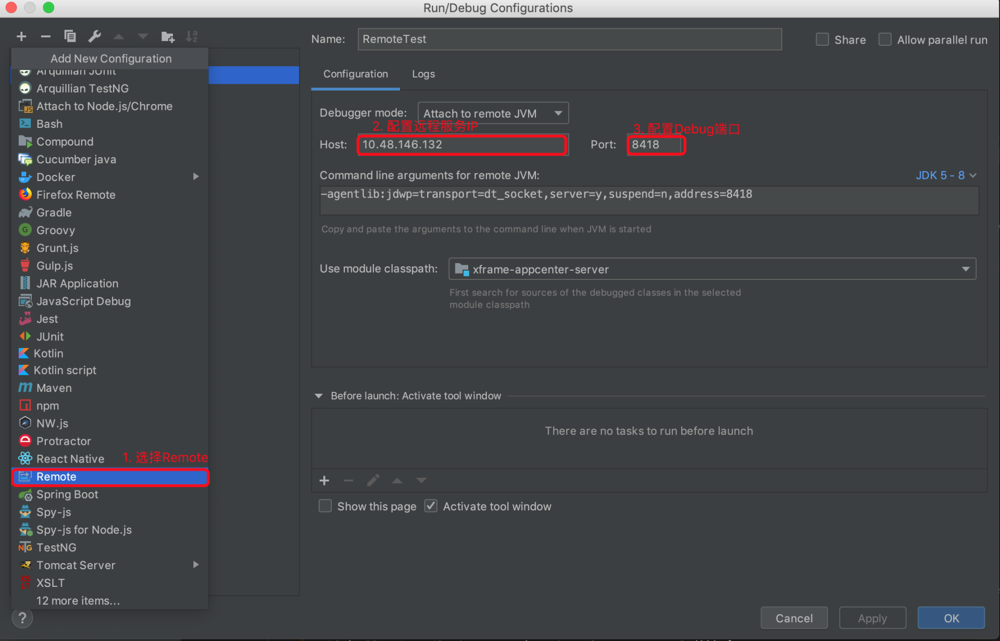

JDWP（Java Debug Wire Protocol），它提供了调试器和目标 JVM （target vm）之间的调试协议。
在 target vm 启动时，增加这个 JAVA_OPTS：
JAVA_OPTS="-Xdebug -Xnoagent -Djava.compiler=NONE -Xrunjdwp:transport=dt_socket,server=y,suspend=n,address=26310"
在服务器端，增加 remote debuging 的时候使用如下配置：
# Java 9 以上
-agentlib:jdwp=transport=dt_socket,server=y,suspend=n,address=*:8000
# Java 5-8
-agentlib:jdwp=transport=dt_socket,server=y,suspend=n,address=8000
# Java 1.4.x
-Xdebug -Xrunjdwp:transport=dt_socket,server=y,suspend=n,address=8000
# Java 1.3.x 及以下
-Xnoagent -Djava.compiler=NONE -Xdebug -Xrunjdwp:transport=dt_socket,server=y,suspend=n,address=8000


可以看出 Java agent API 的出现，对 Java 技术体系的影响还是很大的。